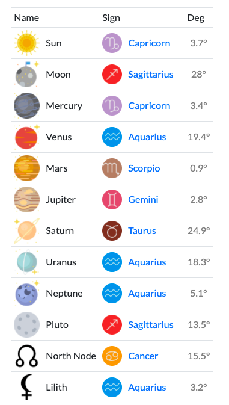

here is ur natal chart...

what's a natal chart???
a natal chart is a snapshot of the sky at the moment you were born. It remains fixed throughout ur lifetime n it gives u clues to ur major life lessons, shows ur destiny, reveals ur personality traits n also hidden desires, as well as points the way to ur soul’s purpose.
here's birth chart data for Monday, December 25, 2000
actually,, ur natal chart can be deeper than this but since idk ur birth time, i can't tell ur rising sign and house positions bcs the birth time was not specified. alsooo ur moon sign (which is in sag) MIGHT be wrong bcs in this case the moon was close entering another position during ur birthday. sooo ur moon sign could be either sag or one sign after which is capricorn ~it all depend on ur birthtime~
LET'S START WITH PLANETS!
as u can see from the picture on the left, we have so many planets. the one u probably most familiar with is the sun which u have it in capricorn! each planet represents energies and cosmic forces that manifest in different ways.
sun: represents whats exciting and vibrant about us (personality/individuality)
moon: shows our deepest feelings and instinctual responses (emotions)
mercury: relates to how we think & express ourselves (communication)
venus: the planet of priorities, beauty, love, and money. rules love & relationship. (preferences)
mars: represents ur deep primal energy (motivation & drive)
jupiter: associated with fortune and good luck (principles of growth/expansion ?? if that makes sense)
saturn: associated with restrictions, obligation, authority, career, and such (responsibility)
uranus: related to individuality, rebellion, and the future (how u seek freedom!)
neptune: represents spirituality, creativity, and intuitivity (basically aura that surrounds u)
pluto: shows the area of life where you'll personally face the intense powers of creation and destruction (transformation)
every planet orbits the sun at a different speed, going slower and slower the farther they are from the sun. so all these planets r divided into two groups; the "inner planets" and the "outer planets"
inner planets: sun, moon, mercury, mars, and venus; move quickly and as a result, they affect ur day-to-day life, moods, n habits.
outer planets: jupiter, saturn, neptune, uranus, and pluto; move slowly and as a result, they shape the bigger trends in your life.
i share the same signs as u in all five outer planets, which is why outer planters are tend to shape the entire generations.
< previous page lez move on >